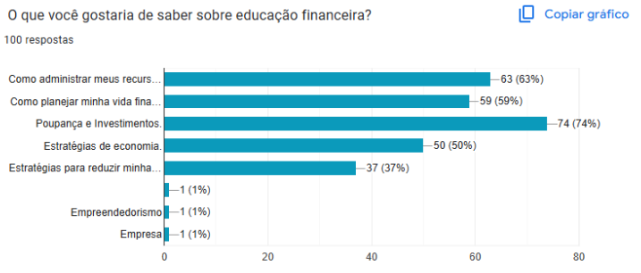

Questionario
Aplicação de um formulário de Educação Financeira com o objetivo de coletar e analisar dados sobre o conhecimento financeiro dos estudantes do IFRS-Campus Erechim. As respostas coletadas nos permitirão identificar os conhecimento e, a partir disso, promover soluções e dicas de acordo com as respostas. falar turmas e cursos
Com a aplicação do formulário, percebemos que há um interesse crescente dos jovens em entender e gerenciar melhor suas finanças. Falar sobre esse assunto é essencial, pois promove não apenas a responsabilidade financeira, mas também a maior facilidade em enfrentar problemas futuros.
